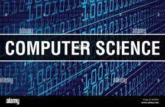
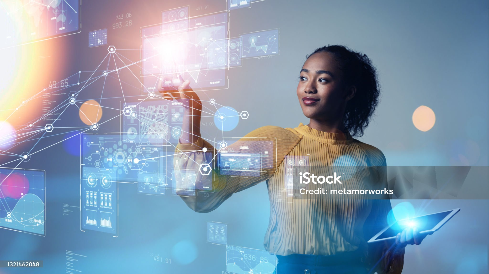

COMPUTER SCIENCE IN UG
Computer science involves the study and development of applications that allow for our everyday use of computers, the software systems that support these applications, and the means and methods used to produce both applications and systems that behave reliably, correctly and ethically.
At the heart of Computer Science lies the skill of computer programming and employers who hire Computer Scientists expect adept programmers with knowledge of current techniques and tools and the ability to apply sound engineering principles to the development, construction and maintenance of computer programs.
The range of courses available in the department and the skills acquired by students enable them to find employment in many diverse fields of the economy and prepare our graduates for the computing industry, working in a project team (or research and development team), and to enable the graduate to bring specialist skills to that team. The course also provides the platform for further study or research through exposure to established and emerging technologies and methods, and to active fields of research in Computer Science.
The Department offers two undergraduate degree programmes, Bachelor of Science in Computer Science Single-Major (3:2:1:1) and Major-Minor (3:2:2:1) as well as Bachelor of Science in Information Technology.
OUR ORGANIZATION
The University of Ghana is one of the Africa's most prominent public universities.
Our impact on individuals, our region and the world is profound, whether we are launching young people into a boundless future or confronting the grand challenges of our time through dauntless research.
UG educates more than 38,000students annually, with approximately 2.64% being computer science students. We turn ideas into impact and transform the world around us.
At UG, we take pride in the pivotal role we play in shaping the future. By empowering and launching young minds into a boundless future, we contribute to the development of a new generation of leaders, thinkers, and innovators.
Our educational programs are designed to provide students with a well-rounded and transformative learning experience, equipping them with the skills and knowledge needed to thrive in an ever-changing world.

OUR COMMUNITY
If you are inspired by a big challenge, you've come to the right place!
Our computer science programs are designed to provide students with more than just theoretical knowledge.
We offer a hands-on and innovative learning environment where students have the opportunity to engage with cutting-edge technologies. From artificial intelligence and data science to cybersecurity and software development, our curriculum is crafted to keep pace with the rapidly evolving field of computer science.
Through group projects,code drills, and collaborative research initiatives, we encourage our community members to learn from each other, building a network of support that extends beyond the classroom.
Our community is well-connected with the industry. We facilitate interactions with professionals, organize guest lectures, and provide internship opportunities that bridge the gap between academia and the tech industry
Join the vibrant and forward-thinking computer science community at the University of Ghana, where challenges are embraced, boundaries are pushed, and the future of technology is shaped by the next generation of innovators and leaders.
Distance Learning
Experience a UG-CDCD classroom from wherever you are.
We bring the UG-CDCD (University of Ghana - Center for Distance and Continuing Education) classroom experience to your fingertips, allowing you to tailor your education to fit your schedule and lifestyle, regardless of your physical location.
Take advantage of real-time lectures and personal interaction with professors through a suite of online delivery options, customizing your degree to fit your schedule.
Join a diverse and global community of learners. Our distance learning programs attract students from various backgrounds and locations, fostering a rich and inclusive learning environment.
At UG's Computer Science Department, we prioritize personal interaction between students and professors, even in the virtual space. Our faculty members are committed to providing the same level of support and engagement as in traditional classrooms.
Our online classroom maintains the same level of academic rigor, while providing students with more ways of learning so seize the opportunity to advance your career and academic pursuits with the flexibility and excellence of our distance learning programs.
Building Our Future
Building our future in the Computer Science Department at the University of Ghana is not just an academic pursuit; it's a collective commitment to realizing infinite possibilities and fostering unshakable optimism.
Our students, faculty, and community members share a common thread—a deep belief in the transformative power of education, innovation, and collaboration.
At the heart of our community is a connection that transcends geographical boundaries. We bring together individuals from diverse backgrounds, creating a global network that enriches the learning experience.
Through collaborative projects, international partnerships, and interactions with experts in the field, you'll have the opportunity to connect with others near and far, broadening your perspectives and expanding your horizons.